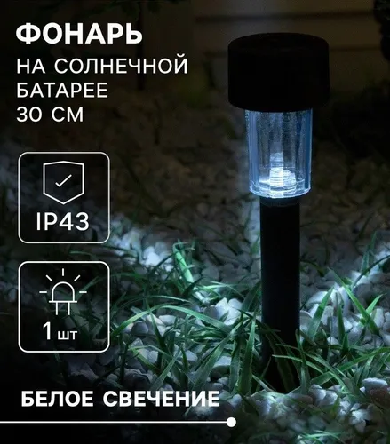

Бюджетный вариант: свет, который включается сам — до 1000 ₽
Те же условия: никакой пайки, доставка до 7 дней, лампа загорается при темноте.
Только вместо сборки из панели, контроллера и аккумулятора берём готовые светильники на
солнечной батарее: внутри у них уже есть всё то же самое — панель, аккумулятор, датчик темноты
и светодиод.
396 ₽3 садовых светильника на солнечной батарее
132 ₽цена одного светильника — дешевле любой сборки
0 ₽инструментов и проводов — ничего лишнего
1 132 ₽если собирать мини-набор своими руками — дороже
Два пути — и почему я рекомендую первый
Путь
Что покупаешь
Итого
Сборка
Минусы
Готовые светильники рекомендую
3 садовых светильника на солнечной батарее
396 ₽
воткнуть в землю
один светодиод на штуку, свет декоративный, а не «чтобы читать»
дороже готового, требует аккуратности и понимания; часть деталей без проводов-перемычек не соединить
Главная мысль. Готовый садовый светильник за 132 ₽ — это ровно то,
что мы собирали в полном варианте, только в одном корпусе и в сто раз дешевле: панель,
аккумулятор, датчик темноты и светодиод уже внутри, а производитель сделал миллион таких.
Собирать это из отдельных деталей дороже и дольше. Самоделка имеет смысл только тогда,
когда нужна своя мощность, свой размер или лампа внутри дома.
Путь 1: готовые светильники

Готовый светильник
Светильник летний садовый на солнечной батарее, 4.5х30х4.5 см, 1 LED, свечение белое
1 светодиод, панель и аккумулятор внутри
Достаточно воткнуть в землю — светит сам с наступлением темноты
Каждый светильник работает автономно: днём панель заряжает встроенный аккумулятор,
с наступлением темноты светодиод включается сам, утром гаснет. Ни проводов, ни розетки,
ни настройки — только воткнуть в землю или прикрутить к стене.
Путь 2: если хочется собрать самому — честная смета
Считаю по тем же правилам: все позиции с доставкой до 7 дней, соединения — разъёмы и винтовые
клеммы, без паяльника.
Роль
Деталь
Цена
Доставка
Панель
Мини солнечная панель 6 В 1 Вт 110*60 мм поликристаллическая для D
435 ₽
1 дн.
Плата зарядки
Модуль заряда Li-ion аккумуляторов TP4056 (с защитой), гнездо Micr
Держатель 18650 холдер. Батарейный отсек 18650. Для 1шт под пайку.
99 ₽
5 дн.
Датчик света
Датчик света на фоторезисторе, пороговый
108 ₽
1 дн.
Реле
Модуль реле - 5 вольт 1 реле Ардуин
76 ₽
3 дн.
Светодиод
Компактный светодиодный USB светильник для ноутбука 3LED B41 теплы
79 ₽
1 дн.
Провода
Провод соединительный мама-мама "Dupont", 10 см, 40 шт
124 ₽
1 дн.
Итого
1 132 ₽
Что тут честно сказать. Без проводов-перемычек набор стоит 1 008 ₽ —
в тысячу влезает. С ними — 1 132 ₽, то есть дороже трёх готовых светильников
(396 ₽). Плюс есть два подводных камня, которых нет у готового изделия:
модуль реле на 5 В от аккумулятора 3,7 В может не срабатывать (нужен либо 3-вольтовый,
либо питание от двух элементов), а панель на 1 Вт даёт очень мало — зимой почти ничего.
Если цель — «дешёвый свет, который включается сам», первый путь объективно лучше.
Расчёт мини-набора: сколько он реально может
Что считаем
Формула
Результат
Соберёт панель 1 Вт за день
1 Вт × 2.5 ч × 70%
1.8 Вт·ч
Запас в аккумуляторе 18650 (2200 мА·ч)
3,7 В × 2,2 А·ч
8.1 Вт·ч
Съест один светодиод за ночь
0.25 Вт × 6 ч
1.5 Вт·ч
Вывод
панели хватает на 1.2 ночи работы одного светодиода — мини-набор
работоспособен, но это свет «на один диод», а не освещение комнаты
У готового садового светильника параметры того же порядка: маленькая панель, аккумулятор
на несколько сотен мА·ч и один светодиод. Разница только в том, что там это уже собрано,
герметично и стоит в разы дешевле.
Что выбрать
Нужен свет вокруг дома или на даче — бери 3 садовых светильника
(396 ₽) или семь штук на тысячу: 924 ₽. Ноль работы руками.
Нужно ярче, чем декоративный светодиод — уличный светильник-прожектор с пультом
и датчиком движения за 660 ₽: светит заметно сильнее, питается от своей панели.
Нужна лампа внутри дома — это уже полный вариант с аккумулятором на 7 А·ч
и низковольтной лампой: 3 368 ₽, страница с расчётом и схемой.
Просто хочется спаять/собрать самому — смета выше 1 132 ₽, будет дороже
готового и с подводными камнями. Но если интересно именно собрать — это рабочий путь.